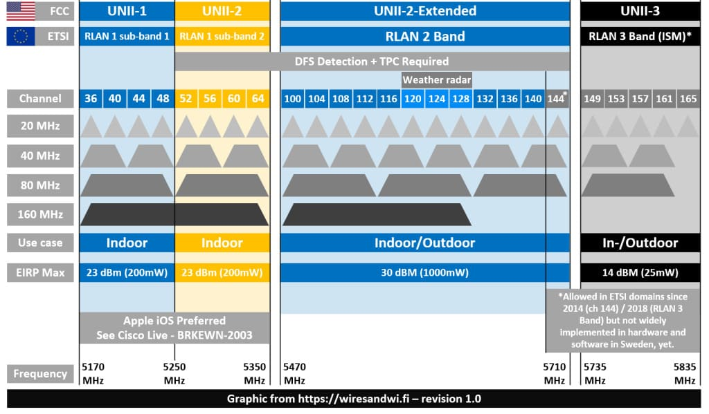

Стандарты wi-fi
Дополнительную информацию о стандартах 802.11n/ac/ax вы найдете в статьях:
- Базовые положения стандарта Wi-Fi 4 (IEEE 802.11n)
- Базовые положения стандарта Wi-Fi 5 (IEEE 802.11ac)
- Что нужно знать о стандарте Wi-Fi 6 (IEEE 802.11ax)
- Расшифровка класса Wi-Fi
- Доступные каналы в диапазоне 5 ГГц
- Wi-Fi: неочевидные нюансы (на примере домашней сети)
Расшифровка класса Wi-Fi
AX
Означает, что точка доступа Wi-Fi интернет-центра поддерживает стандарт IEEE 802.11ax (Wi-Fi 6). Интернет-центр может работать в двух частотных диапазонах 2.4 и 5 ГГц. Данный стандарт обратно совместим с предыдущими стандартами беспроводных сетей. К этой точке доступа вы сможете подключить устройства стандартов IEEE 802.11a/b/g/n/ac/ax.
AC
Означает, что точка доступа Wi-Fi интернет-центра поддерживает стандарт IEEE 802.11ac (Wi-Fi 5). Интернет-центр может работать в двух частотных диапазонах 2.4 и 5 ГГц. Данный стандарт обратно совместим с предыдущими стандартами беспроводных сетей. К этой точке доступа вы сможете подключить устройства стандартов IEEE 802.11a/b/g/n/ac.
N
Означает, что точка доступа Wi-Fi интернет-центра поддерживает стандарт IEEE 802.11n (Wi-Fi 4). Интернет-центр может работать в одном частотном диапазоне 2.4 ГГц. Данный стандарт обратно совместим с предыдущими стандартами беспроводных сетей. К этой точке доступа вы сможете подключить устройства стандартов IEEE 802.11b/g/n.Справка: Что касается цифр в обозначении класса Wi-Fi, они показывают округленные значения, получаемые в результате суммирования максимально возможных канальных скоростей точек доступа в диапазонах 2,4 и 5 ГГц, которые реализованы аппаратно на разных чипах и работают параллельно и независимо друг от друга.
Бесшовный роуминг Wi-Fi
802.11k
Быстрый поиск соседних точек доступа нужен для поддержки клиентов, которые хотят быстро переключаться между точками доступа. При первом подключении к точке доступа клиент получает информацию от неё о поддержке 802.11k. Если поддерживается, то клиент посылает запрос (если сам клиент поддерживает 802.11k) точке доступа на получение списка соседних точек доступа.
При ослаблении сигнала текущей точки доступа клиент будет искать точки доступа из этого списка (сканирует только нужные каналы). После миграции клиент снова запрашивает обновленный список соседних точек доступа. Клиентам передается информация о соседних точках доступа и уровнях их сигнала, на основании которого клиент сам принимает решение о подключении к той или иной точке доступа, в том или ином диапазоне, без сканирования всего радиоэфира. Если бы на клиенте происходила процедура сканирования всего радиоэфира, это приводило бы к многосекундным задержкам. Применение оптимизированного списка соседних точек доступа значительно сокращает время сканирования радиоэфира.
802.11r
Данный протокол реализует технологию хранения ключей шифрования всех точек доступа. По-другому его также называют FT (Fast Transition). При миграции к новой точке доступе нет необходимости тратить время на согласование ключей шифрования.
Стандарт предусматривает два вида режима FT — Over the Air (OTA) и Over the DS (OTD):
- OTA — по воздуху клиент взаимодействует с точкой доступа, к которой он хочет подключиться перед началом миграции. Данная функции всегда включена по умолчанию в Keenetic. Нет возможности выключить.
- OTD — клиент взаимодействует с точкой доступа, к которой он хочет подключиться перед началом миграции, через точку доступа, к которой он подключен на текущий момент времени. Данная функция отключена в Keenetic.
Современные модели смартфонов обычно поддерживают Over the Air и этот режим выбирается смартфонами для роуминга. Настройка параметров FT производится самостоятельно пользователем. Должны быть заданы одинаковые идентификаторы и ключи мобильного домена на всех интернет-центрах сегмента локальной сети. При использовании режима FT на голосе небольшая пауза может быть заметна, но важно, что это не приведет к разрыву сессий.
802.11v (BSS Transition Management)
Протокол рекомендует клиенту со стороны Keenetic перейти на смежный диапазон в рамках одного двухдиапазонного роутера. К примеру, когда у клиента низкий уровень RSSI в сети 5 ГГц, ему посылается предложение о переходе на смежный диапазон 2.4 ГГц. И наоборот, когда уровень сигнала в сети 5 ГГц лучше, клиенту рекомендуется перейти в этот диапазон. Клиент сам принимает решение о переходе. Роуминг по протоколу 802.11v может происходить совместно с правилами Band Steering. Если клиент поддерживает 802.11v, то это позволяет роутеру управлять клиентами, которые заявили в ответ поддержку WNM BTM (BSS Transition Management), и отправлять их в смежный диапазон, путем BTM-запросов.
Подробнее про бесшовный роуминг Wi-FiТехнологии
Beamforming
Сигналы, посылаемые антеннами, отрегулированы (откалиброваны) таким образом, чтобы они испытывали усиливающую интерференцию непосредственно в области приемной антенны абонентского оборудования, в то время как в других направлениях они испытывают гасящую интерференцию (под интерференцией в сетях Wi-Fi понимается сигнал, передаваемый другими устройствами на том же или близком к нему канале, на котором вещает интересующая вас точка доступа; интерференция — одна из разновидностей помех). Радиосигналы, принимаемые от клиентов Wi-Fi, помогают точке доступа определить местоположение абонентов, и эта информация в дальнейшем используется набором микросхем точки доступа для расчета и формирования узконаправленного главного лепестка в направлении от точки доступа к клиентам. Как известно, чем лучше уровень сигнала (выше значение SNR) клиента, тем большую скорость можно получить при передаче данных с точки доступа на клиента. Технология адаптивного формирования диаграммы направленности позволяет откалибровать в сторону клиента передаваемый сигнал и улучшить таким образом канал между точкой доступа и клиентом.
Подробно о технологии BeamformingAirtime Fairness
Технология Airtime Fairness (перевод с англ. Справедливость эфирного времени) направлена на увеличение общей производительности сети Wi-Fi за счет решения проблемы медленного клиента.
В технологии Wi-Fi пропускная способность сети может ограничиваться скоростью самого медленного устройства. Вы наверно замечали, что в сети Wi-Fi с большим количеством клиентов беспроводные устройства работают медленнее, чем обычно. Предположим, что к точке доступа Wi-Fi стандарта 802.11ac одновременно подключен клиент с адаптером 802.11ac на скорости 433 Мбит/с и медленный клиент с адаптером стандарта 802.11a (на скорости 54 Мбит/с). При высокой активности медленного устройства (например, при закачке большого файла из Интернета) произойдет общее снижение пропускной способности в сети Wi-Fi. Это происходит из-за того, что передача данных к каждому из клиентов ограничивается количеством пакетов, поэтому быстрые устройства находятся в постоянном ожидании, пока медленные клиенты передают данные.
Для уменьшения негативного влияния медленных устройств на пропускную способность беспроводной сети используется технология Airtime Fairness. С помощью нее роутер ограничивает передачу данных не количеством пакетов, а временем передачи, независимо от количества переданных данных. Всем клиентам сети Wi-Fi выделяется одинаковое время для передачи данных. За один период быстрые клиенты успевают передать больше данных. В этом случае будет наблюдаться небольшое снижение пропускной способности только на медленных устройствах, но не произойдет снижение производительности быстрых клиентов и всей сети Wi-Fi. Таким образом удается обеспечить равный доступ клиентам к радиоэфиру, независимо от канальной скорости передачи данных.
Подробно о технологии Airtime FairnessMU-MIMO
Технология MIMO, реализованная в стандарте 802.11n, обеспечивает одновременную работу передачи/приема данных между устройствами сети. Но в конкретный момент времени только одно устройство может получать и отправлять данные, тогда как другие ожидают своей очереди. Стандарт 802.11ас значительно улучшает эту ситуацию. В рамках стандарта была реализована технология многопользовательского MIMO — MU-MIMO (Multi-User Multiple-Input, Multiple-Output).
MU-MIMO создаёт многопоточный канал передачи, при использовании которого остальные устройства не ждут своей очереди.
Устройства с поддержкой MU-MIMO могут обеспечивать одновременную передачу четырёх потоков данных (до четырёх клиентов). Это позволило реализовать более эффективное использование беспроводной сети и сократить задержки (время ожидания на обслуживание), которые возникают при значительном увеличении числа клиентов в сети.
Band Steering
Band Steering. Основная цель этого механизма — динамическое распределение беспроводных клиентов между диапазонами 2,4 ГГц и 5 ГГц. Зачем Band Steering нужен? Если у вас есть беспроводные устройства, способные работать в диапазоне 5 ГГц и, особенно, поддерживающие стандарт 802.11ac, желательно, чтобы они работали именно на этой частоте. Диапазон 5 ГГц имеет ряд преимуществ — в частотном диапазоне 5 ГГц больше каналов, что сокращает межканальные помехи; в диапазоне 5 ГГц может быть использована ширина канала до 40 или 80 МГц, что в разы увеличивает скорость передачи данных для современных беспроводных адаптеров Wi-Fi.
Подробно о технологии Band SteeringРежимы работы точки доступа
Режим беспроводного маршрутизатора (Wireless Router)
Стандартный режим. Роутер подключается к провайдеру (Ethernet, PPPoE, L2TP) и создает собственную защищенную сеть.Режим точки доступа (Access Point / AP)
Устройство подключается кабелем к уже существующей сети и работает как Wi-Fi передатчик. В этом режиме отключаются функции NAT, DHCP и Firewall. В этом режиме роутер не выполняет функцию маршрутизатора, а просто расширяет существующую сеть.Режим ретранслятора/усилителя (Range Extender/Repeater)
Подключается к основному Wi-Fi роутеру по воздуху и «удлиняет» его сеть, устраняя «мертвые зоны».Режим моста (WISP / WDS)
Используется для подключения проводных устройств (Smart TV, ПК) к сети Wi-Fi, или для создания беспроводного моста между двумя роутерами. Пример настройки роутера Tp-Link в режиме моста (WDS). Соединяем два роутера по Wi-FiРасширенные параметры настройки беспроводной сети на точке доступа

Transmission (Передача)
-
DTIM Интервал : Delivery traffic indication message — это поле обратного отсчета, уведомляющее беспроводных клиентов о том, когда они могут ожидать следующее окно для прослушивания широковещательных и мультикаст-сообщений от беспроводного маршрутизатора. Эта функция полезна для компьютеров, настроенных на переход в спящий режим, так как сообщение DTIM уведомит клиента о том, что у беспроводного маршрутизатора имеется информация для передачи.
-
Beacon Interval (Интервал маяка): Интервал маяка означает период времени между одним маяком и следующим. Значение по умолчанию — 100 (единица измерения миллисекунды, или 1/1000 секунды). Уменьшите интервал маяка для повышения производительности передачи данных в сложных условиях или при перемещении клиентов, но это увеличит энергопотребление клиента.
RTS
- RTS Threshold (Пороговое значение RTS): RTS Threshold (Пороговое значение RTS) - это минимальное число байт, для которого может действовать механизм соединения по каналу с использованием сигналов готовности к передаче/готовности к приему (RTS/CTS). В сети с высоким уровнем радиочастотных помех или большим числом беспроводных устройств, использующих один и тот же канал, снижение значения RTS Threshold (Пороговое значение RTS) может способствовать сокращению числа потерянных фреймов. Пороговое значение RTS по умолчанию составляет 2347 байт; это максимально возможное значение.
При проблемах, связанных с неустойчивым потоком данных, значение в поле «RTS Threshold» можно изменить в пределах от “256” до “2346”. Значение по умолчанию: “2346”. При возникновении ошибок, при передаче больших пакетов данных, можно уменьшить значение поля «Fragmentation» в пределах от “1500” до “2346”.
-
AMPDU RTS : Использовать RTS для каждого AMPDU.
-
Порог RTS : Уменьшите сигнал RTS (Request To Send), чтобы повысить эффективность передачи в условиях зашумленной среды или при большом количестве клиентов.
-
Automatic 802.11n protection (Автоматическая защита 802.11n): Когда это флажок установлен, маршрутизатор будет использовать сигналы готовности к передаче/готовности к приему (RTS/CTS), чтобы повысить производительность в средах со смешанными режимами 802.11. Когда этот флажок не установлен, в большинстве случаев максимальной будет производительность в режиме 802.11, в то время как другие режимы 802.11 (802.11b и т.д.) будут второстепенными.
WMM (Wi-Fi multimedia) (WMM (Мультимедиа Wi-Fi))
- WMM : Включите WMM (WiFi Multimedia) для улучшения пользовательского опыта мультимедийных приложений в Вашей беспроводной сети. По умолчанию эта функция отключена. Для включения этой функции установите флажок Enable WMM (Включить WMM) (Мультимедиа Wi-Fi). Чтобы использовать эту функцию на других устройствах, с которыми выполняется соединение, они также должны поддерживать WMM, а эта функция должна быть для них включена.
Данный параметр включает функцию Quality of Service (QoS) (Качество обслуживания), используемую для приложений мультимедиа, таких как Voice-over-IP (VoIP) и видео. Это обеспечивает сетевым пакетам приложений мультимедиа приоритет над обычными сетевыми пакетами данных, позволяя приложениям мультимедиа работать устойчивее и с меньшим количеством ошибок.
-
WMM No-Acknowledgement (Разрешить не подтверждать прием) — это политика подтверждения на уровне MAC. При включении обеспечивается более высокая пропускная способность, но увеличивается количество ошибок в шумной среде радиочастот (RF). Неподтверждение приема является частью политики подтверждения приема, используемой на уровне MAC. Разрешение не подтверждать прием может привести не только к увеличению пропускной способности, но и к более высокой частотности ошибок при наличии радиочастотных помех.
-
WMM APSD : Включить или отключить WMM APSD (Automatic Power Save Delivery). Функция APSD контролирует использование радио для устройств, работающих от батарей, для обеспечения более длительного срока службы батареи в определенных условиях. С помощью функции APSD устанавливается более длительный интервал маяка, пока не будет запущено приложение, для которого необходим короткий интервал обмена пакетами. Протокол передачи голоса через Интернет (VoIP) является примером приложения, для которого необходим короткий интервал обмена пакетами. Функция APSD влияет на использование радио и срок службы батареи, только если беспроводной клиент также поддерживает APSD.
Preamble (Преамбула)
-
Preamble (Преамбула): Определяет длину блока контроля при помощи циклического избыточного кода (CRC), используемого при обмене данными между маршрутизатором и беспроводными клиентами. Преамбула состоит из полей Synchronization (Синхронизация) и Start Frame Delimiter (SFD) (Начальный ограничитель фрейма (SFD)). Поле синхронизации используется для указания необходимости доставки фрейма на беспроводную станцию, измерения частоты радиосигнала и выполнения необходимых корректировок. Поле SFD, стоящее в конце преамбулы, используется для отметки начала фрейма.
-
Режим 802.11b : Тип преамбулы определяет длину CRC (циклический избыточный код), который используется для обнаружения ошибок передачи данных между беспроводными устройствами. Рекомендуем настроить все беспроводные устройства на одинаковый тип преамбулы. Используйте короткую преамбулу для устройств в зонах с высокой сетевой нагрузкой. Используйте длинную преамбулу для старых беспроводных устройств.
Rate
-
NPHY rate (Скорость NPHY): Устанавливает скорость на физической уровне (NPHY). Эти скорости применяются, только если для параметра 802.11n mode (Режим 802.11n) установлено значение Automatic (Авто).
-
Legacy rate (Существующая скорость): Это скорость беспроводного соединения, при которой информация будет передаваться и приниматься по беспроводной сети. Этот параметр отображается, только если для параметра 802.11n mode (Режим 802.11n) установлено значение Off (Выключен).
-
Multicast rate (Скорость многоадресной передачи): Указывает скорость, с которой многоадресные пакеты передаются и принимаются по беспроводной сети. Многоадресные пакеты используются для отправки одного сообщения нескольким получателям определенной группы. Некоторыми примерами приложений многоадресной передачи являются телеконференция, видеоконференция и отправка сообщений электронной почты группе получателей. Задание высокой скорости многоадресной передачи может улучшить производительность функций многоадресной передачи. Скорости указываются в Мбит/с. Можно выбрать одно из следующих значений: Automatic (Авто), 1, 2, 5.5, 6, 9, 11, 12, 18, 24, 36, 48, 54.
Wi-fi 6
-
OFDMA / MU-MIMO : OFDMA — многопользовательская версия цифровой модуляционной технологии OFDM. В WiFi 6 (802.11ax) OFDMA — одна из ключевых функций для повышения производительности сети.
-
Wi-Fi Agile multiband : Альянс Wi-Fi выпустил Wi-Fi Agile Multiband для лучшего покрытия WiFi и повышения скорости соединения.
-
Target Wake Time : Target Wake Time (TWT) — это функция WiFi 6, которая позволяет клиентским устройствам и точкам доступа планировать время пробуждения устройств для передачи или получения данных, снижая энергопотребление.
Other
-
Airtime Fairness : Обеспечивает справедливое распределение эфирного времени между несколькими соединениями.
-
IGMP Snooping : При включении IGMP Snooping отслеживает IGMP-коммуникацию между устройствами и оптимизирует беспроводной мультикаст-трафик.
-
TX Bursting : Tx Burst включает непрерывный режим передачи для увеличения пиковой скорости передачи данных от интернет-центра к клиентам 802.11n/ac (т.е. увеличить исходящую скорость). Эффективность работы данного режима зависит от возможностей беспроводного адаптера клиента. Например, на некоторых адаптерах скорость Интернета для Wi-Fi-устройств может снизиться. По умолчанию режим Непрерывная передача Tx Burst выключен.
-
Access Point Isolation (Изоляция точки доступа) Если маршрутизатор будет использоваться в общедоступном месте, но при этом беспроводным клиентам должно быть запрещено использовать общие файлы или принтеры, установите флажок Access point isolation (Изоляция точки доступа). Если этот флажок установлен, то все беспроводные клиенты смогут получить доступ только в Интернет. Примером такого общедоступного места, где может потребоваться активация этой функции, является кафе или гостиница. По умолчанию эта функция отключена.